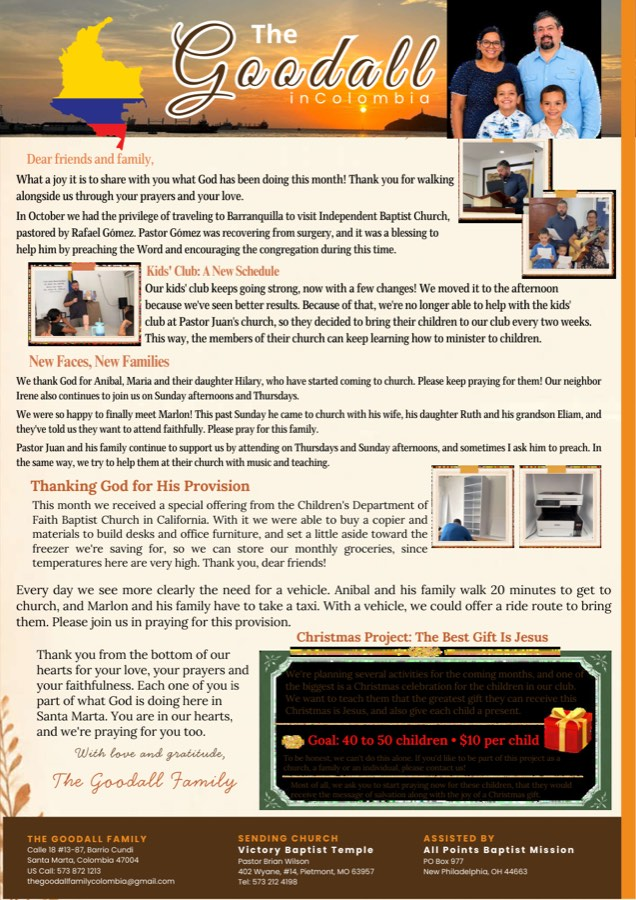

Más Reciente

Clic para abrir el PDF →
Octubre 2026
Nuevas Familias, Nueva Fotocopiadora y un Proyecto de Navidad
Viajamos a Barranquilla para animar al Pastor Rafael Gómez, quien se está recuperando de una cirugía, y recibimos a varias familias nuevas en nuestros servicios — incluyendo a Aníbal, Marlon, y sus familias. Una ofrenda especial nos proveyó una fotocopiadora y muebles de oficina, y ahora oramos por un vehículo mientras planeamos un evento navideño para 40 a 50 niños del vecindario.